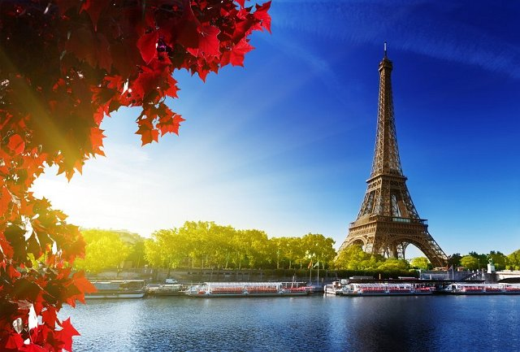
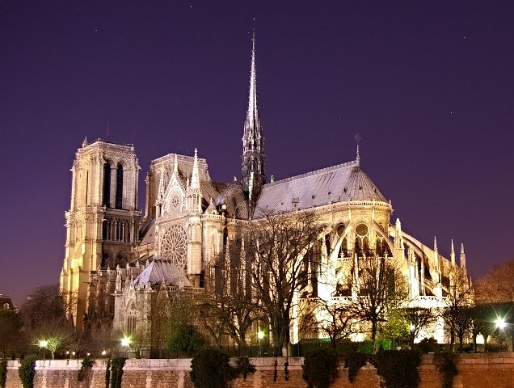

Atractii turistice principale
Arcul de Triumf este un adevarat simbol al Parisului
Arcul de Triumf a fost inaltat peste ramasitele unui soldat necunoscut decedat in timpul Primului Razboi Mondial si o faclie perpetua arde in fundatie. De la Arcul de Triumf pornesc artere de circulatie in toate directiile si de aceea piata Charles de Gaulle in care este situat Arcul este cunoscuta si sub numele de “Piata Stelei” (Place de l'Étoile). Arcul se afla la capatul de Vest al vestitului bulevard Champs-Élysées. Arcul de Triumf este un omagiu in onoarea celor ce au luptat pentru Franta, in special in timpul razboaielor napoleoniene. Pe interior si deasupra Arcului sunt inscriptionate numele tuturor generalilor si razboaielor purtate.
Arcul de Triumf masoara 49.5 metri inaltime, 45 de metri latime si 22 in adancime si este al doilea arc de triumf ca marime existent in lume. Este atat de mare incat in cadrul festivitatilor dedicate incheierii Primului Razboi, un pilot foarte iscusit a zburat cu biplanul sau pe sub el.
Bulevardul Champs Elysees din Paris

Champs Elysees, cel mai frumos bulevard din lume
Champs-Élysées e cunoscut in Franta sub numele de "La plus belle avenue du monde" (Cel mai frumos bulevard din lume) si se intinde de la Piata Concorde pana la Arcul de Triumf. A fost renovat si s-au construit trotuare largi din granit. Este unul dintre cele mai importante obiective turistice ale Parisului.
Tour Eiffel - Turnul Eiffel din Paris

Turnul Eiffel este obiectivul turistic ce nu trebuie ratat in vacanta la Paris
Daca mergi in Paris trebuie neaparat sa vizitezi Turnul Eiffel. Sa mergi in Paris si sa nu vizitezi Turnul Eiffel este pur si simplu un lucru de neconceput. De fapt aceasta atractie a Parisului poate fi vazuta din aproape orice punct al orasului. Din Turnul Eiffel nu vei avea parte de cea mai spectaculoasa priveliste din Paris dar este in mod cert un loc in care trebuie sa te duci din cauza arhitecturii sale si a grandorii.
Basilica Sacre Coeur

Basilica Sacre Coeur - o atractie de marca a capitalei Frantei
Basilica Sacre Coeur este o basilica romano-catolica si un popular obiectiv turistic din Paris. Este inchinata inimii sacre a lui Iisus. Cladirea se afla in cel mai inalt punct din oras. In 1873 consilierii orasului Paris au votat o lege ce privea exproprierea terenului din varful dealului Montmartre pentru construirea basilicii. Arhitectul Paul Abadie a proiectat basilica dupa ce a castigat un concurs impotriva altor 77 de arhitecti. Acesta era deja cunoscut pentru munca sa de restaurare a Catedralei Sf-Front din Périgueux.
Notre Dame, Paris

Notre Dame nu este chiar cea mai mare catedrala din lume, dar cu siguranta este cea mai faimoasa. Capodopera gotica este localizata in Île de la Cité, o mica insula in inima orasului. Episcopul Parisului Maurice de Sully a inceput constructia in 1163. Catedrala trebuia construita in noul stil gotic dorindu-se sa reflecte statutul Parisului de capitala a regatului francez. A fost prima catedrala construita la o scara uriasa devenind astfel prototipul pentru catedralele ce s-au construit in Franta in perioada urmatoare, printre acestea fiind Catedrala din Amiens, Chartres sau Rheims.
Muzeul Luvru
Muzeul Luvru este cel mai vizitat muzeu de arta din lume, un monument plin de incarcatura istorica si un muzeu national al Frantei. Este un obiectiv turistic central din Paris fiind situat in arondismentul 1 al orasului. In cadrul muzeului Luvru sunt expuse in jur de 35000 de obiecte de arta din mileniul 6 I.Ch. si pana in secolul al XIX-lea D.Ch.
Muzeul este gazduit de palatul Louvre care initial a fost conceput ca o fortareata in secolul al XII-lea sub domnia lui Filip al II-lea. Ruinele acestei fortarete inca mai pot fi vazute si in zilele noastre. Cladirea a continuat sa fie extinsa de multe ori de-a lungul secolelor pana a ajuns la forma actuala a Palatului Louvre. In anul 1674 resedinta regilor Frantei a fost mutata la Palatul Versailles si astfel Palatul Louvre a ramas principalul loc in care colectiile regale de arta au fost expuse. In timpul Revolutiei Franceze s-a decis ca Louvre-ul sa devina muzeu si sa gazduiasca cele mai pretioase capodopere ale poporului francez.
Cand s-a deschis, in data de 10 August 1793, muzeul a prezentat o colectie de 537 de picturi, marea majoritate fiind opere confiscate de la biserica si de la monarhia franceza. In timpul lui Napoleon, muzeul si-a marit foarte mult colectia si si-a schimbat si numele in Muzeul Napoleon. Dupa infrangerea lui Napoleon multe dintre operele confiscate de acesta au fost returnate proprietarilor lor de drept. Colectia muzeului a continuat insa sa se mareasca; in timpul celui de-al doilea Imperiu a castigat peste 20000 de piese. Numarul operelor de arta detinute de Muzeul Louvre a continuat sa creasca constant din daruri si donatii cu exceptia celor doua razboaie mondiale.
Din anul 2008 colectia Muzeului Louvre este impartita in opt categorii distincte: Egiptul Antic; Antichitati din Orientul Apropiat; Grecia, Etruscii si Imperiul Roman; Arta Islamica; Sculptura; Arta decorativa; Pictura; Printuri si Desene.
In prezent muzeul gazduieste peste 380.000 obiecte si 35000 de opere de arta. Peste 60000 de metri patrati sunt dedicati exponatelor permanente. Dintre cei 15000 de vizitatori zilnici peste 65% sunt straini.
Colectia de tablouri numara peste 6000 de piese datand din secolul al XIII-lea si pana in 1848. La Louvre poate fi gasita si capodopera lui Leonardo da Vinci, Mona Lisa printre multe alte opere de arta de o valoare inestimabila.